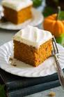

Pumpkin Cake Recipe (Yum!)

Description
A delicious pumpkin cake that is super simple to make and even easier to enjoy! Share it with friend or eat it all by yourself like moi, this cake will make your day!
Ingredients
- cooking spray
- 1 (18.25 ounce) package spice cake mix
- 1 (15 ounce) can pumpkin
Steps
- Gather ingredients
- Preheat the oven to 350 degrees F (175 degrees C)
- Generously grease a 9x13-inch baking pan with cooking spray
- Mix spice cake mix and canned pumpking together in a large bowl until well combined: spread evenly into the prepared pan.
- Bake in the preheated oven until a toothpick inserted into the center comes out clean, takes about 25 to 30 minutes
- Cool and serve, or store in the refrigerator to serve the next day